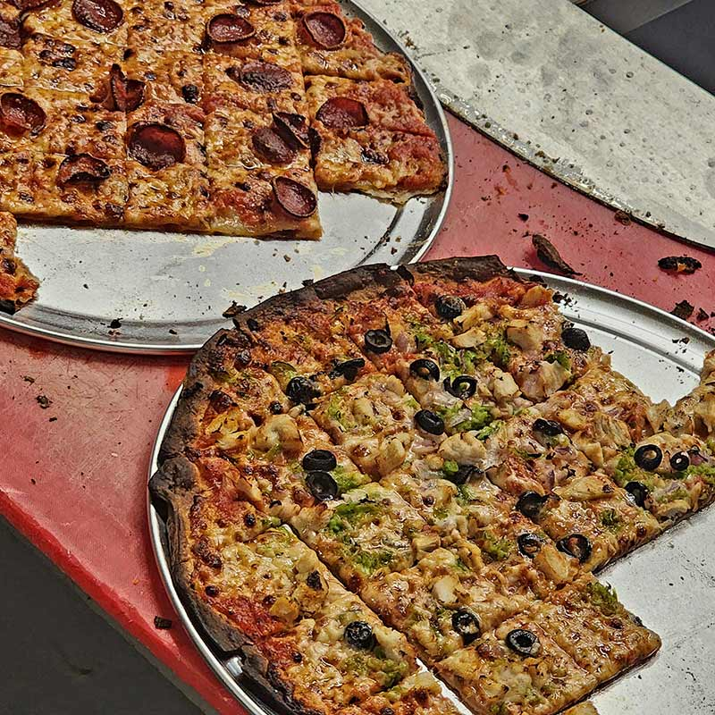
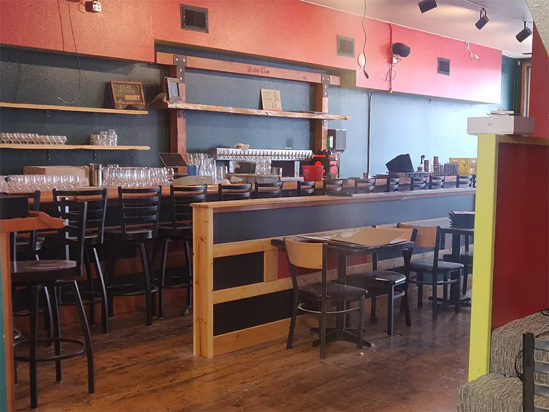
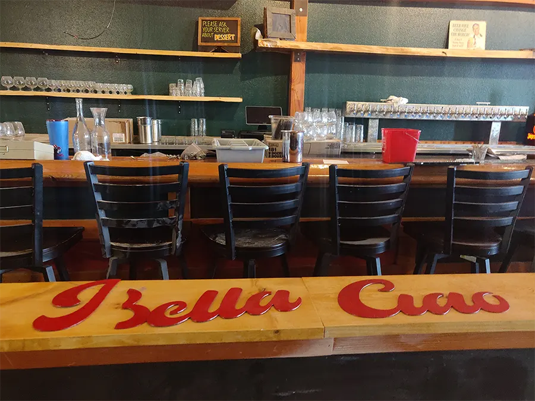

A neighborhood pizza tavern
opening March 12, 2024
in downtown Bellingham, WA
A mix of
classic Midwest and eastern pizzerias
with TVs playing cartoons, old movies, and sports.
We serve Chicago tavern-style pizza
with a selection of pleasant drinks
from staples to house-made concoctions.
We're open every day from 3 PM to 12 AM
and are 21+ after 9 PM.
We're available for private events & happy
to cater your next party or gathering.
• • • • •
Tavern-style pizza

A thin-crust, square-cut style of pizza also known as "Chicago thin-crust."
Tavern-style pizza originated in Chicago as a bar snack, both delicious and a great pairing with beer and refreshing cocktails.
What makes tavern-style pizza unique is the crunchy, cracker-like crust that takes several days to prepare.
PIZZAS
Cheese
Melted mozzarella with tomato sauce
Pepperoni
Melted mozzarella with pepperoni and tomato sauce
Tavern Pie
Lamb, red onion, sambal chili sauce
House Supreme
Sausage, onion, mushroom, bell pepper, black olives
BBQ
Pulled pork, goat cheese, crispy onions, hot honey, BBQ red sauce
Hawaiian
Spam, pineapple, bacon bits, Sriracha chili sauce
Butter Chicken
Chicken, red onion, tomatoes, butter sauce
Veggie
Peppers, red onion, spinach, tomatoes, olives
APPETIZERS
Mozzarella Stick
Log of cheese breaded, fried, and served with red sauce
Bread Sticks
Three bread sticks dusted in parm and garlic
Cheese Bread
Loaf of bread covered in brick cheese and finished with garlic and herbs
Pizza Rolls
Pepperoni and mozzarella pizza rolls
SALADS
Bella House Salad
Roma tomatoes, red onion, pepperoncini, olives, croutons, shaved parmesan, Italian vinaigrette
Admiralty Caesar
Chopped romaine, breadcrumbs, crispy parmesan, Caesar dressing
• • • • •
DRINKS
Draught Cocktails
Negroni
Old Fashioned
Draught Beers
Carlsberg Pilsner
Fremont Pils
Jellyfish Planktonic Red
Georgetown Bodhizafa IPA
Boundary Bay Sticky Trees IPA
San Juan Brewing ESB
Urban Family Blackberry Sour
Kulshan Brewing Storm Clouds Doppelbock
Larabee Lager Hefeweizen
Dry Humor Dry Cider
Coors Light
Bottles / Cans
Rainier
Coors Light Tallboy
Corona
High Life Pony
White Claw (Mango)
Yonder Cider (Blackberry & Sage)
Non-Alcoholic
Athletic Brewing Golden Dawn
Kombuchatown Blood Orange
Phony Negroni
• • • • •


More soon!
• • • • •